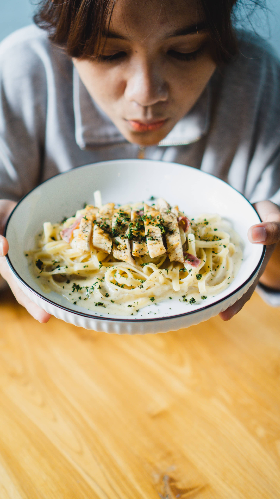

Culture
In the heart of Pasta Palete's kitchen, these three pillars—Tradition, Innovation, and
Sustainability—intersect and harmonize. The result is a culinary tapestry that tells a story of
pasta's rich heritage, creative evolution, and a commitment to a sustainable future. Join us at
Pasta Palete, where these cultural principles come together to create an extraordinary dining
experience—a celebration of the past, a taste of the future, and a conscious choice for the present.

Tradition
Honoring the Roots of Pasta Making
Central to the Pasta Palete ethos is a deep respect for tradition. We pay homage to the
rich history of pasta, drawing inspiration from authentic Italian recipes and
time-tested techniques. Our chefs, led by the culinary maestro Isabella De Luca, channel
the spirit of traditional pasta-making, ensuring that each dish carries the essence of
centuries-old culinary wisdom. From the meticulous preparation of handmade pasta to the
soul-warming flavors of classic sauces, tradition is the cornerstone of every plate that
graces our tables.

Innovation
Crafting Culinary Experiences Beyond
Boundaries
While tradition forms the foundation, innovation propels us into uncharted culinary
territories. Pasta Palete is a playground for creativity, where our chefs experiment
with flavors, textures, and presentations to redefine the pasta experience. Guided by a
spirit of culinary exploration, we infuse unexpected twists into our menu, introducing
handmade pastas with unique flavor profiles and imaginative pairings that challenge
conventions. Innovation at Pasta Palete is an ongoing journey, ensuring that each visit
is an opportunity to savor the latest expressions of culinary artistry.

Sustainability
Nurturing the Planet and Palate
Pasta Palete is committed to sustainable gastronomy—a commitment that goes beyond the
kitchen to reflect our responsibility to the environment. Sourcing locally, minimizing
food waste, and implementing eco-friendly practices are integral to our culinary
culture. We believe that a sustainable approach not only preserves the planet for future
generations but also enhances the overall dining experience. Our dedication to
sustainability is woven into the fabric of Pasta Palete, ensuring that every bite is a
conscious and delicious choice.
Travel
Embark on these travel topics at Pasta Palete, where each exploration promises a delightful
adventure, a broader understanding of pasta culture, and a memorable journey through the world of
flavors we proudly offer.

A Journey Through Pasta Regions
Embark on a virtual voyage through the diverse pasta regions
at
Pasta Palete. Each dish on our menu is a culinary passport, offering a taste of
Italy's varied culinary landscapes. From the robust flavors of Southern Italy to
the
delicate nuances of Northern specialties, explore the distinct characteristics
that
define each region's pasta traditions. Join us on a flavorful expedition as we
showcase the culinary diversity that makes Pasta Palete a destination for pasta
enthusiasts seeking an authentic Italian experience

Innovative
Fusion: Where Tradition
Meets Global Inspiration
Take a detour from the conventional and explore the innovative
fusion creations at Pasta Palete. Our chefs are culinary globetrotters, infusing
traditional pasta recipes with international flavors. Discover unexpected pairings
and creative twists that redefine the boundaries of pasta. Whether it's an
Asian-inspired fusion or a Mediterranean-infused delight, each dish is a passport to
a world of culinary exploration. Join us on a journey where tradition seamlessly
converges with global inspiration, creating a unique and unforgettable dining
experience.

The Sustainability Expedition
Travel beyond the plate and delve into Pasta Palete's commitment
to sustainability. Our culinary journey extends to environmentally conscious
practices, from locally sourced ingredients to eco-friendly kitchen initiatives.
Learn about our efforts to minimize our ecological footprint and contribute to a
more sustainable future. Explore how sustainability is not just a culinary choice
but an integral part of the Pasta Palete experience. Join us on the sustainability
expedition and savor the flavors of a restaurant dedicated to nurturing both the
planet and your palate.

Culinary
Workshops and Events: A Taste
of Pasta Culture
Immerse yourself in the Pasta Palete experience by participating
in our culinary workshops and events. From pasta-making masterclasses to themed
gastronomic gatherings, these events offer an opportunity to not only taste but also
actively engage with the rich pasta culture. Learn the art of crafting handmade
pasta, understand the nuances of traditional sauces, and explore the finer points of
pasta pairings. These events are a unique travel experience within the walls of
Pasta Palete, providing a deeper connection to the culinary heritage we
cherish.